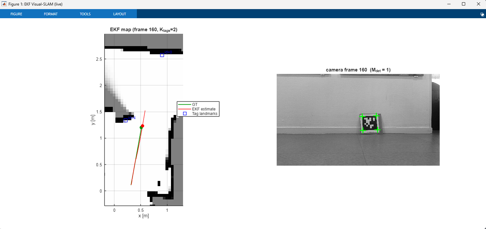
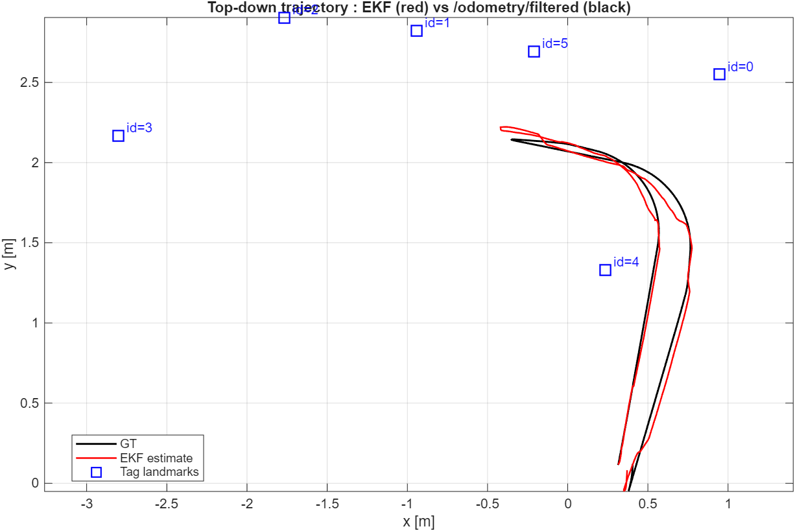
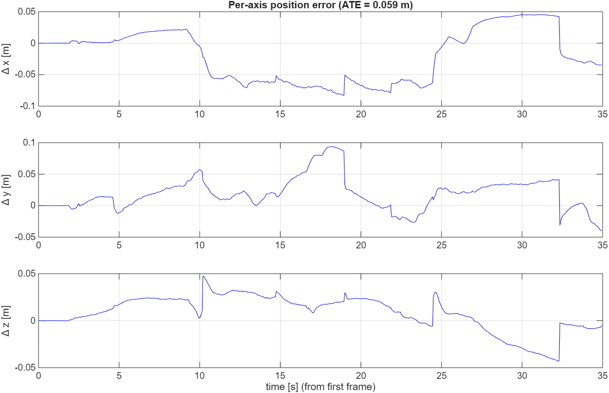
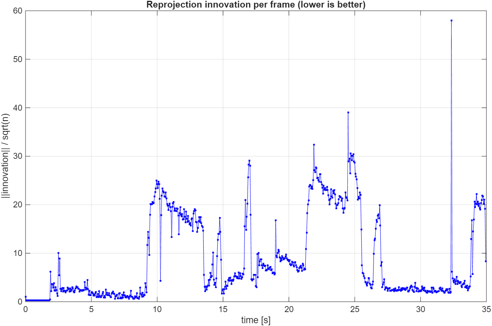
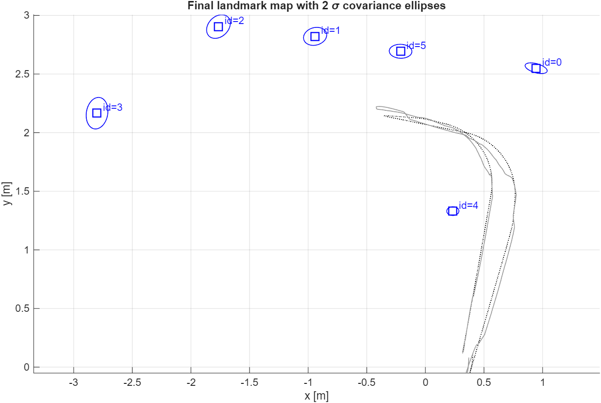
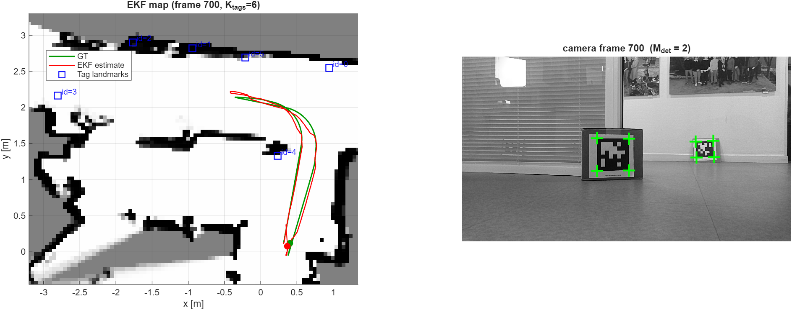

SLAM visuel EKF avec amers AprilTag EKF Visual-SLAM with AprilTag landmarks
Localisation et cartographie simultanées à partir d'une seule caméra RGB, sur un Husarion ROSbot 3 Pro — rejeu hors-ligne de rosbags ROS 2 sous MATLAB. Simultaneous localization and mapping from a single RGB camera, on a Husarion ROSbot 3 Pro — offline ROS 2 rosbag replay in MATLAB.
1. Le problème1. The problem
Un robot lâché dans une pièce inconnue fait face à un problème d'œuf et de poule : pour savoir où il est, il lui faut une carte ; mais pour construire une carte, il doit savoir où il est. Le SLAM (Simultaneous Localization And Mapping) résout les deux à la fois. Le problème est traité comme une estimation bayésienne récursive : on maintient une distribution de probabilité sur un grand vecteur d'état qui empile la pose du robot et la position de tous les amers observés, et on met cette distribution à jour à chaque nouvelle image. L'estimateur est le filtre de Kalman étendu (EKF), qui approxime la distribution par une gaussienne 𝒩(x̂, P) : une moyenne x̂ (la meilleure estimation) et une covariance P (l'incertitude). Le filtre alterne alors deux mouvements, image après image : prédire (pousser l'état à travers un modèle de mouvement — l'incertitude croît) et corriger (comparer ce que la caméra a réellement vu à ce qu'elle aurait dû voir selon l'estimation courante — l'incertitude décroît). A robot dropped into an unknown room faces a chicken-and-egg problem: to know where it is it needs a map, but to build a map it needs to know where it is. SLAM (Simultaneous Localization And Mapping) solves both at once. The problem is treated as recursive Bayesian estimation: we keep a probability distribution over a large state vector stacking the robot pose and the positions of all observed landmarks, and we update that distribution every time a new image arrives. The estimator is the Extended Kalman Filter (EKF), which approximates the distribution by a Gaussian 𝒩(x̂, P): a mean x̂ (the best estimate) and a covariance P (the uncertainty). The filter then alternates two moves, frame after frame: predict (push the state through a motion model — uncertainty grows) and correct (compare what the camera actually saw with what the current estimate says it should have seen — uncertainty shrinks).
2. Pourquoi des AprilTags ?2. Why AprilTags?
Le SLAM visuel généraliste extrait et apparie des milliers de points d'intérêt
naturels — puissant mais lourd et fragile. Ici, on utilise des
AprilTags : des codes-barres carrés imprimés (famille
tag36h11) qu'un détecteur retrouve de manière fiable, en renvoyant à la
fois un identifiant entier unique et les coordonnées pixel des quatre coins.
Chaque tag ayant une taille physique connue (L = 0,1515 m) et un identifiant connu,
l'association de données (« quel amer est-ce ? ») devient triviale et exacte — pas de
gating au plus proche voisin, pas de faux appariements. On peut ainsi se concentrer
sur les mathématiques de l'estimation plutôt que sur l'appariement de descripteurs.
General visual SLAM extracts and matches thousands of natural feature points —
powerful but heavy and brittle. Here we use AprilTags instead:
printed square barcodes (family tag36h11) that a detector finds
reliably, returning both a unique integer ID and the pixel coordinates of
the four corners. Because every tag has a known physical size (L = 0.1515 m) and a
known ID, data association ("which landmark is this?") becomes trivial and exact —
no nearest-neighbour gating, no spurious matches. This lets the work focus on the
estimation mathematics rather than on feature matching.
3. Plateforme et données3. Platform and data
Les données ont été enregistrées sur un Husarion ROSbot 3 Pro
(robot mobile à entraînement différentiel) équipé d'une caméra
Luxonis OAK-D Pro. Six AprilTags (IDs 0 à 5) ont été disposés dans
une pièce ; le robot a été piloté pendant qu'un rosbag ROS 2 enregistrait
les images caméra, le LiDAR 2D, la géométrie statique du robot
(/tf_static) et l'odométrie fusionnée roues/IMU. Le bag est ensuite
rejoué hors-ligne dans MATLAB : rien ne tourne sur le robot. Point clé :
seul le flux RGB monoculaire alimente le filtre — l'odométrie du
robot sert exclusivement de vérité terrain pour l'évaluation, et le LiDAR
sert uniquement à dessiner une carte d'occupation en toile de fond.
The data was recorded on a Husarion ROSbot 3 Pro (a
differential-drive mobile robot) fitted with a Luxonis OAK-D Pro
camera. Six AprilTags (IDs 0 to 5) were placed around a room; the robot was driven
around while a ROS 2 rosbag recorded the camera images, the 2D LiDAR, the
robot's static geometry (/tf_static) and the fused wheel/IMU odometry.
The bag is then replayed offline in MATLAB: nothing runs on the robot. Key point:
only the monocular RGB stream feeds the filter — the robot's
odometry is used exclusively as ground truth for evaluation, and the LiDAR
only draws an occupancy-grid backdrop.
| Topic ROS 2ROS 2 topic | RôleRole |
|---|---|
/oak/rgb/image_raw/compressed |
Images caméra — l'unique entrée du filtreCamera images — the filter's only input |
/oak/rgb/camera_info |
Intrinsèques caméra (matrice K)Camera intrinsics (K matrix) |
/tf_static |
Transformations rigides base ↔ caméraRigid base ↔ camera transforms |
/odometry/filtered |
Vérité terrain (évaluation uniquement)Ground truth (evaluation only) |
/scan_filtered |
LiDAR 2D — carte d'occupation en fond2D LiDAR — occupancy-map backdrop |

4. Le vecteur d'état4. The state vector
L'état global empile le sous-état robot et un bloc de 6 degrés de liberté par tag cartographié : The global state stacks the robot sub-state and one 6-DoF block per mapped tag:
- 1–3 : angles d'Euler de la caméra (attitude RWC)1–3: camera Euler angles (attitude RWC)
- 4–6 : position de la caméra pWC dans le monde4–6: camera position pWC in the world
- 7–9 : vitesse angulaire w (repère corps)7–9: angular velocity w (body frame)
- 10 : vitesse linéaire avant v1 (axe +X caméra)10: forward linear velocity v1 (camera +X axis)
- 10+6(j−1)+1 … +6 : angles d'Euler et position du tag j10+6(j−1)+1 … +6: Euler angles and position of tag j
K est le nombre de tags actuellement dans la carte : l'état grandit en cours de route. À la première observation d'un identifiant, la pose du tag est amorcée en inversant l'observation (composition TW,P = TW,C · TC→O · TO,P à partir de la pose fournie par le détecteur), puis l'état est augmenté de 6 entrées et la covariance d'un bloc 6×6 volontairement lâche (a priori ≈ 22 cm en position, ≈ 10° en angle). Les corrélations caméra-tag, initialisées à zéro, se reconstruisent d'elles-mêmes après une ou deux ré-observations. K is the number of tags currently in the map: the state grows on the fly. On the first sighting of an ID, the tag pose is bootstrapped by inverting the observation (composing TW,P = TW,C · TC→O · TO,P from the detector's pose), then the state is augmented by 6 entries and the covariance by a deliberately loose 6×6 block (prior ≈ 22 cm in position, ≈ 10° in angle). The camera-tag correlations, initialized at zero, rebuild themselves after one or two re-observations.
5. Prédiction — modèle à vitesse constante5. Prediction — constant-velocity model
Entre deux images séparées de δt, le robot est propagé par un modèle à vitesse constante : la caméra avance le long de son propre axe X à la vitesse v1, et son orientation intègre la vitesse angulaire w. Les tags ne bougent pas — leurs blocs sont propagés par l'identité. Between two frames separated by δt, the robot is propagated with a constant-velocity model: the camera moves forward along its own X axis at speed v1, and its orientation integrates the angular velocity w. The tags do not move — their blocks are propagated by the identity.
θWC(k) = θWC(k−1) + w(k−1) · δt + nw
La jacobienne de prédiction F = ∂f/∂x est calculée analytiquement : seul le bloc robot 10×10 est non trivial (dérivées de la première colonne R1 de la matrice de rotation par rapport aux trois angles d'Euler), le reste est l'identité. La covariance est ensuite propagée puis symétrisée pour combattre les erreurs d'arrondi : The prediction Jacobian F = ∂f/∂x is computed analytically: only the 10×10 robot block is non-trivial (derivatives of the rotation matrix's first column R1 with respect to the three Euler angles), the rest is identity. The covariance is then propagated and symmetrized to fight round-off:
6. Observation — reprojeter les coins des tags6. Observation — reprojecting the tag corners
La mesure d'un tag est constituée des pixels de ses quatre coins, empilés en un vecteur z = [u1, v1, …, u4, v4]T de dimension 8. Le modèle d'observation h(x) pousse chaque coin, connu dans le repère du tag, à travers la chaîne de repères jusqu'au plan image : The measurement for one tag is the pixels of its four corners, stacked into an 8-vector z = [u1, v1, …, u4, v4]T. The observation model h(x) pushes each corner, known in the tag's own frame, through the frame chain down to the image plane:
π(PO) = [ fx XO/ZO + cx, fy YO/ZO + cy ]T
La division par la profondeur ZO est l'effet de perspective du modèle
sténopé (les objets lointains paraissent plus petits). L'état de l'EKF fournit
(RWP, pWP) et (RWC, pWC) ; la rotation
fixe corps→optique Re (lue sur /tf_static) et la matrice
d'étalonnage K sont constantes.
The division by the depth ZO is the pinhole model's perspective effect
(far things look smaller). The EKF state supplies (RWP, pWP)
and (RWC, pWC); the fixed body→optical rotation Re
(read from /tf_static) and the calibration matrix K are constant.
7. Correction — la mise à jour de Kalman7. Correction — the Kalman update
Pour tous les tags détectés dans l'image, on forme l'innovation (mesure moins prédiction), on empile, et on applique la mise à jour EKF standard : For every tag detected in the frame, we form the innovation (measurement minus prediction), stack everything, and apply the standard EKF update:
S = H P− HT + R (covariance d'innovationinnovation covariance)
W = P− HT S−1 (gain de KalmanKalman gain)
x̂ = x̂− + W ν, P = (I − W H) P−
Le gain W mélange prédiction et mesure en proportion inverse de leurs incertitudes. C'est aussi le mécanisme par lequel un tag bien localisé corrige la caméra et réciproquement : (I − WH)P− remplit les covariances croisées caméra ↔ tag même quand elles partent de zéro. The gain W blends prediction and measurement in inverse proportion to their uncertainties. It is also the mechanism by which a well-localised tag corrects the camera and vice versa: (I − WH)P− fills in the camera ↔ tag cross-covariances even when they start at zero.
Le modèle h(x) étant pénible à dériver à la main, la jacobienne de mesure H est calculée numériquement par différences finies avant (δ = 10⁻⁶) — et uniquement sur les colonnes actives : h pour le tag j ne dépend que de la pose caméra (colonnes 1–6) et du bloc de ce tag. Toutes les autres colonnes restent nulles, ce qui garde H creuse. Chaque tag observé contribue un bloc de 8 lignes ; le bruit de mesure vaut R = σpx² I avec σpx = 5 px, volontairement large pour absorber la distorsion non corrigée de l'image. La mise à jour se termine par le rebouclage des angles dans (−π, π] et la symétrisation de P. Since h(x) is awkward to differentiate by hand, the measurement Jacobian H is computed numerically by forward finite differences (δ = 10⁻⁶) — and only on the active columns: h for tag j depends only on the camera pose (columns 1–6) and on that tag's own block. Every other column stays zero, keeping H sparse. Each observed tag contributes an 8-row block; the measurement noise is R = σpx² I with σpx = 5 px, deliberately large to absorb the uncorrected image distortion. The update ends with angle wrapping into (−π, π] and symmetrization of P.
8. Carte d'occupation LiDAR8. LiDAR occupancy map
Pour que l'environnement reconstruit ressemble à une carte SLAM « classique » (murs, espace libre, obstacles), une carte d'occupation 2D est construite à partir de zéro depuis le LiDAR : le monde est discrétisé en cellules de 5 cm, chaque cellule maintient un log-odds d'occupation mis à jour par lancer de rayons (les cellules traversées par le rayon deviennent libres, la cellule d'impact devient occupée). Cette carte ne nourrit pas le filtre — elle sert d'arrière-plan de visualisation et de vérification qualitative de la géométrie estimée. To make the reconstructed environment look like a "classic" SLAM map (walls, free space, obstacles), a 2D occupancy grid is built from scratch from the LiDAR: the world is discretised into 5 cm cells, each holding an occupancy log-odds updated by ray casting (cells crossed by a ray become free, the hit cell becomes occupied). This map does not feed the filter — it serves as a visualization backdrop and a qualitative sanity check of the estimated geometry.
9. Résultats9. Results
Alors que le filtre ne voit que la caméra, la trajectoire estimée suit de près la référence odométrique fusionnée. Sa précision est ultimement limitée par la fréquence et la qualité des observations de tags : dans les passages sans tag visible, l'estimation repose sur la seule prédiction à vitesse constante et l'erreur croît, jusqu'à ce qu'un tag revienne dans le champ de vision et ramène l'estimation — visible en dents de scie sur l'erreur par axe. Even though the filter sees only the camera, the estimated trajectory closely tracks the fused-odometry reference. Its accuracy is ultimately limited by how often and how well tags are observed: in stretches with no visible tag the estimate relies purely on the constant-velocity prediction and the error grows, until a tag re-enters the field of view and pulls the estimate back — visible as a saw-tooth in the per-axis error.

/odometry/filtered (noir), avec les six amers cartographiés.
Figure 2: Top-down trajectory — EKF estimate (red) vs /odometry/filtered (black), with the six mapped landmarks.





10. Bilan et limites10. Takeaways and limitations
Ce projet couvre la chaîne SLAM complète : lecture de rosbags ROS 2, calibration et chaîne de repères, détection de marqueurs, conception du vecteur d'état, modèles de mouvement et d'observation avec leurs jacobiennes (analytique pour F, numérique pour H), réglage justifié de chaque bruit, et évaluation quantitative face à une référence. Parmi les limites identifiées : l'absence de correction de distorsion (compensée par un R plus large), l'a priori de covariance croisée nul à l'initialisation des amers (incohérence bénigne qui s'auto-répare), et le modèle à vitesse constante qui peut traîner lors d'accélérations brusques. Autant de pistes d'amélioration clairement cadrées. This project covers the complete SLAM chain: ROS 2 rosbag reading, calibration and frame chains, marker detection, state-vector design, motion and observation models with their Jacobians (analytical for F, numerical for H), a justified choice for every noise value, and quantitative evaluation against a reference. Identified limitations include the missing distortion correction (compensated by a larger R), the zero cross-covariance prior at landmark initialization (a benign, self-healing inconsistency), and the constant-velocity model which can lag under sharp accelerations — all clearly scoped avenues for improvement.
← Retour aux projets← Back to projects